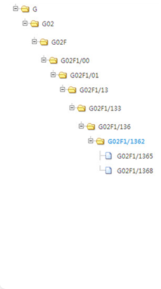

领域名称：
IPC主分类号：
IPC副分类号：
系统推荐IPC分类号：
IPC8分类号

- 部——物
- 光学
- 用于控制光的强度、颜色、相位、偏振或方向的器件或装置，例如转换、选通、调制或解调，上述器件或装置的光学操作是通过改变器件或装置
- 控制来自独立光源的光的强度、颜色、相位、偏振或方向的器件或装置，例如，转换、选通
- 对强队、相位、偏振或颜色的控制
- 基于液晶的，例如单位液晶显示单元（2）
- 构造上的设备；液晶单元的工作；电路装置（用于控制矩阵中液晶元件并且在结构上不与这
- Department - physical
- optical
- Used to control the intensity of light, colors, phase, polariza
- Control from independent sources of light intensity, color, pha
- Control of the top teams, phase, polarization or color (29 \ G0
- Based on liquid crystal, such as unit LCD display unit (2)
- Construction on the equipment; The job of the liquid crystal ce